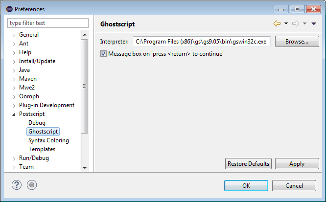

PostScript > Ghostscript
preference page.
PostScript > Ghostscript
preference page.
The following preferences can be changed on the
PostScript > Ghostscript
preference page.
| Option | Description | Default |
|---|---|---|
| Interpreter | The absolute path of the Ghostscript interpreter executable.
This path looks different depending on the operating system.
|
|
| Message box on press <return> to continue | When a page is finished (by the showpage or copypage
operator), Ghostscript prints a prompt line appearing in the Console
view. You can choose between two options:
|
Off |
Here is what the Ghostscript preference page looks like:
